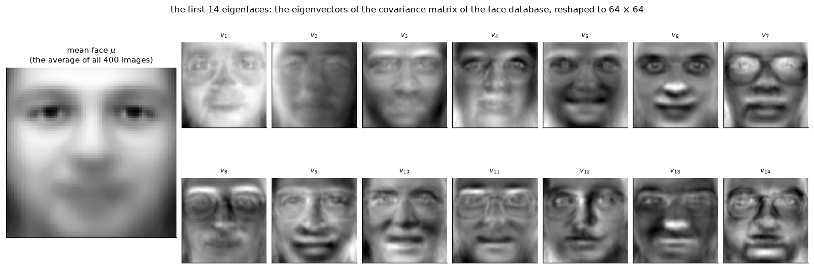
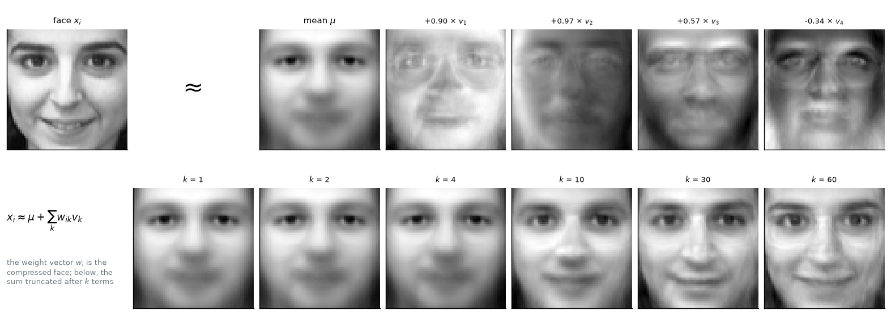
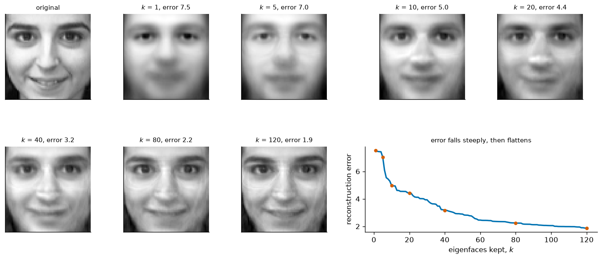
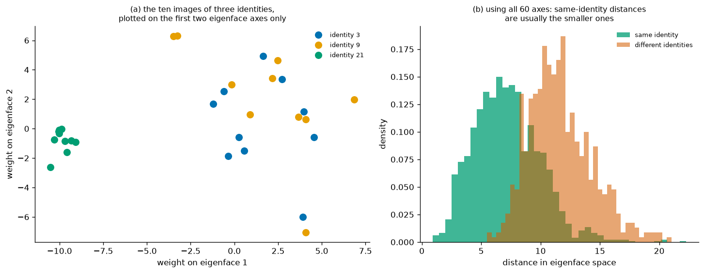
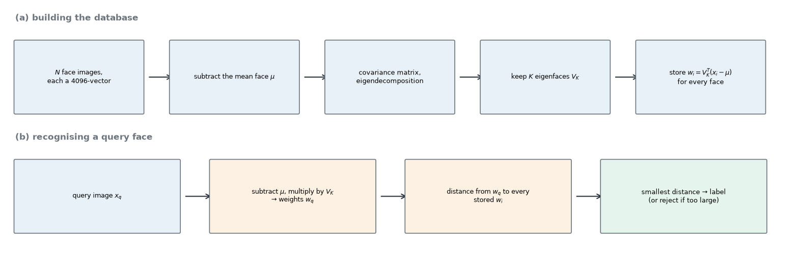

Lesson 05.03
Eigenfaces
Applying PCA to a database of faces: why raw pixels fail, what eigenfaces look like, how a face becomes a short weight vector, and how recognition becomes a nearest-neighbour search in eigenface space.
Learning outcomes
After this lesson you should be able to:
- explain why a naive raw-pixel approach to facial recognition fails;
- describe what eigenfaces are and how a face is represented as a weight vector;
- state the enrolment and query algorithms of the Eigenface method;
- give the advantages of the method and its main limitation.
Naive facial recognition
In object detection and classification we train a classifier with many examples of each class. Facial recognition has the opposite problem: many classes, one per person, and often very few examples of each, possibly only one. The recognition stage therefore often uses no classifier at all, relying instead on brute-force matching of the kind used to match keypoints between images.
The naive approach uses all the pixels of the detected face as a vector and compares it against the equivalent vectors of every face in the database, declaring a match when the Euclidean distance is smallest. On a database as small and as tightly constrained as Olivetti this still classifies most faces correctly, but it is a poor representation. The dimensionality is very high, there are many classes and very few samples per class, which is exactly the curse of dimensionality, and the approach breaks down as the database grows and the imaging conditions loosen. The naive approach is also the slowest possible, since the vectors are long. We cannot reduce the number of faces in the database, but we can shorten the vector that represents each one: the shorter it is, the faster the distances are computed and the less storage the database needs.
![Why raw pixels are a poor representation for faces. Using all 4096 pixels as the vector, this query face's nearest neighbour in the gallery is the wrong person. On a dataset as small and as tightly constrained as this one raw pixels still classify most faces correctly, but every comparison needs 4096 numbers, and with many identities and few examples each the curse of dimensionality bites. Compressing each face to a few dozen PCA weights, the subject of the rest of this lesson, reaches the same accuracy from a vector two hundred times shorter.](figures/naive_fr.png)
Eigenfaces
The Eigenface representation reduces the dimensionality of a database of facial images. Eigenfaces are the set of image vectors $V$ obtained from a principal component analysis of the database of faces, so they are the eigenvectors of the sample covariance matrix of the face vectors. Each has the same length as a face vector, so it can be rearranged and displayed as an image.
The compression property of PCA is used to represent all the faces in the database with a reduced set of eigenvectors, and the representation is used directly for recognition, either by comparing distances between vectors or with a classifier. The advantages are a reduction in database storage, since compressed faces are stored, and a reduction in computation compared with using image pixels.

Representing faces in a database
Because the eigenfaces are the principal components of the faces in the database, each face vector can be transformed into a compressed representation by multiplying it by the set of eigenfaces. That principal-component transformation can be interpreted as building each face from a weighted combination of eigenfaces: each face vector $x_i$ is converted by multiplication with the $k$-eigenface matrix $V_k^{T}$ into a one-dimensional vector
$$w_i = V_k^{T}(x_i - \mu), \tag{1}$$
which is a set of coordinates in the $k$-dimensional eigenface feature space. Each value in $w_i$ is the position along one eigenface dimension, and the vector as a whole is the set of weights for that face. The face itself is approximated by
$$x_i \approx \mu + \sum_{j=1}^{k} w_{ij}\, v_j. \tag{2}$$


Worked example 1: PCA Projection and Reconstruction (Eigenfaces)
In the Eigenfaces method, a face image $\mathbf{x}$ is represented as a linear combination of eigenfaces. Given the mean face $\boldsymbol{\mu}$, eigenfaces $\mathbf{e}_1, \mathbf{e}_2$, and query face $\mathbf{x}$:
$$\boldsymbol{\mu} = \begin{bmatrix} 12 \\ 15 \\ 14 \\ 9 \end{bmatrix}$$
$$\mathbf{e}_1 = \begin{bmatrix} 0.5 \\ 0.5 \\ 0.5 \\ 0.5 \end{bmatrix}$$
$$\mathbf{e}_2 = \begin{bmatrix} 0.5 \\ 0.5 \\ -0.5 \\ -0.5 \end{bmatrix}$$
$$\mathbf{x} = \begin{bmatrix} 24 \\ 25 \\ 25 \\ 6 \end{bmatrix}$$
Compute:
- The mean-centred face $\mathbf{x}_c = \mathbf{x} - \boldsymbol{\mu}$
- The PCA projection coefficients $z_1 = \mathbf{e}_1 \cdot \mathbf{x}_c$ and $z_2 = \mathbf{e}_2 \cdot \mathbf{x}_c$
- The reconstructed face $\hat{\mathbf{x}} = \boldsymbol{\mu} + z_1 \mathbf{e}_1 + z_2 \mathbf{e}_2$
Show the solution
Step 1 – Mean-centred face $\mathbf{x}_c = \mathbf{x} - \boldsymbol{\mu}$:
$$\mathbf{x}_c = \begin{bmatrix} 24 - 12 \\ 25 - 15 \\ 25 - 14 \\ 6 - 9 \end{bmatrix} = \begin{bmatrix} 12 \\ 10 \\ 11 \\ -3 \end{bmatrix}$$
Step 2 – PCA projection coefficients:
$$z_1 = \mathbf{e}_1 \cdot \mathbf{x}_c = (0.5)(12) + (0.5)(10) + (0.5)(11) + (0.5)(-3) = 15$$
$$z_2 = \mathbf{e}_2 \cdot \mathbf{x}_c = (0.5)(12) + (0.5)(10) + (-0.5)(11) + (-0.5)(-3) = 7$$
Step 3 – Reconstructed face $\hat{\mathbf{x}} = \boldsymbol{\mu} + z_1 \mathbf{e}_1 + z_2 \mathbf{e}_2$:
$$\hat{\mathbf{x}} = \begin{bmatrix} 12 + (15)(0.5) + (7)(0.5) = 23 \\ 15 + (15)(0.5) + (7)(0.5) = 26 \\ 14 + (15)(0.5) + (7)(-0.5) = 18 \\ 9 + (15)(0.5) + (7)(-0.5) = 13 \end{bmatrix}$$
$$\hat{\mathbf{x}} = \begin{bmatrix} 23 \\ 26 \\ 18 \\ 13 \end{bmatrix}$$
The Eigenface database algorithm
To convert a database of $N$ faces to its Eigenface representation:
- each image in the database is a vector, for example 64 × 64 = 4096 elements long;
- as in regular PCA, the mean is subtracted from each sample vector; in this case the mean is the average face of the database;
- the sample covariance matrix is obtained from the $N$ face vectors;
- its eigenvalues and eigenvectors are determined; the eigenvectors are the eigenfaces. There are at most $N - 1$ of them, and only $K$ are retained;
- each image in the database is multiplied by the matrix of $K$ eigenvectors, yielding a weight vector $w$. The database of $N$ weight vectors is the compressed representation of the original images.
To recognise a query image against such a database, the query is converted to a vector representation by multiplication with the $K$ stored eigenfaces, and the transformed query vector is compared against the $N$ database vectors. The minimum distance is taken to be a match and a label is output. Unknown faces can be rejected with a criterion like the one used in feature matching: if the difference in distance between the closest and the next closest vector is too small, the match is rejected.


Summary
The Eigenface method is one of the most basic approaches to facial recognition. Because it is based on principal component analysis, which is a method of compression, it may be considered optimal for reconstruction but genuinely non-optimal for discrimination between faces, a point the next two lessons address. As with many facial-recognition methods, it requires the faces in the training and test databases to be centred and the same size. The method can be extended to be more robust to pose by learning representations for different angles, but this requires a detailed database. Interestingly it can also be used for facial expression recognition.
Check your understanding
1. Why does using all the raw pixels of a face as its representation fail?
It is also the slowest possible option, since every comparison uses vectors thousands of elements long.
2. Eigenfaces are
They have the same length as a face vector, hence the name.
3. The weight vector w of a face is obtained by
The weights are the face's coordinates in the K-dimensional eigenface space, and they are what the database stores.
4. A database of N faces yields at most how many eigenfaces?
Only K of them are retained for the representation.
5. Recognising a query face with Eigenfaces amounts to
Unknown faces can be rejected when the nearest distance is too large, or when the nearest and second-nearest are too similar.
6. The main limitation of the Eigenface method is that PCA is
This is exactly what linear discriminant analysis and the Fisherface method address.
Practice questions
Question types from the CE6021 question bank that cover this lesson:
pca_project.
Image credits
- The Database of Faces (Olivetti / AT&T), AT&T Laboratories Cambridge, free for research use
Other figures are generated from synthetic data by the lesson engines.